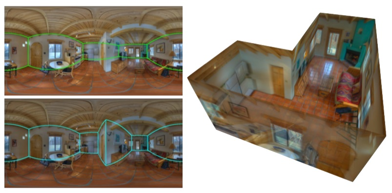
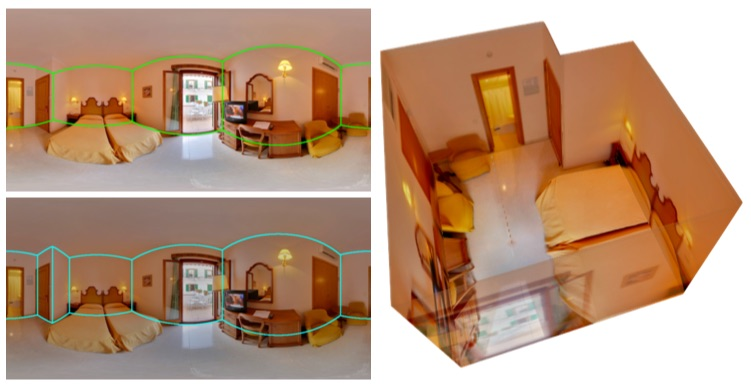
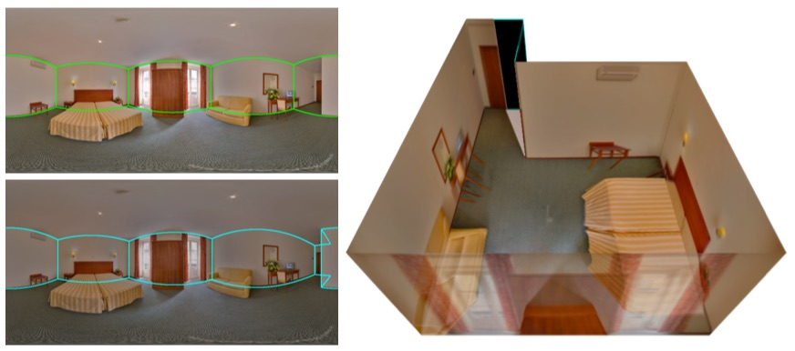
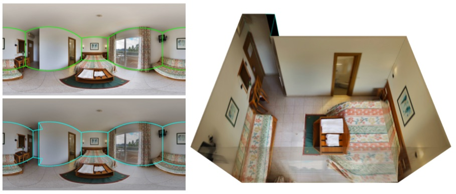
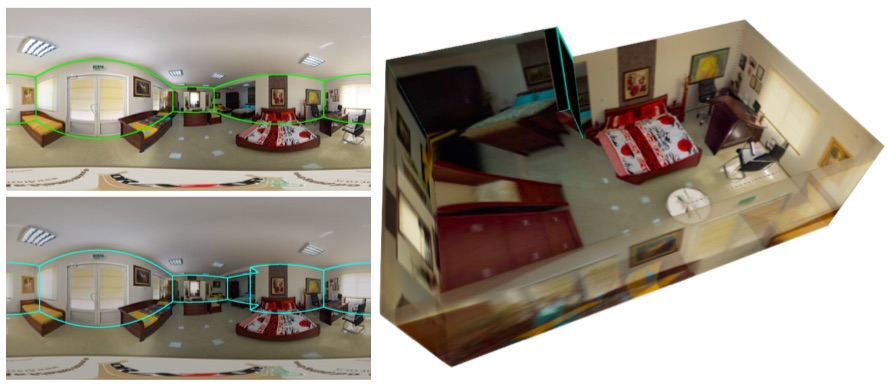
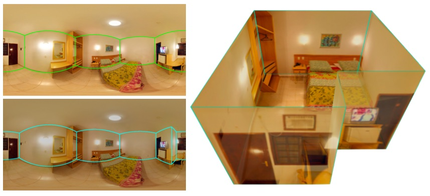
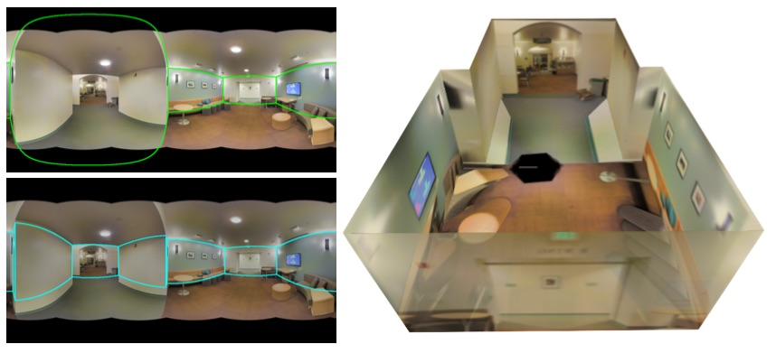
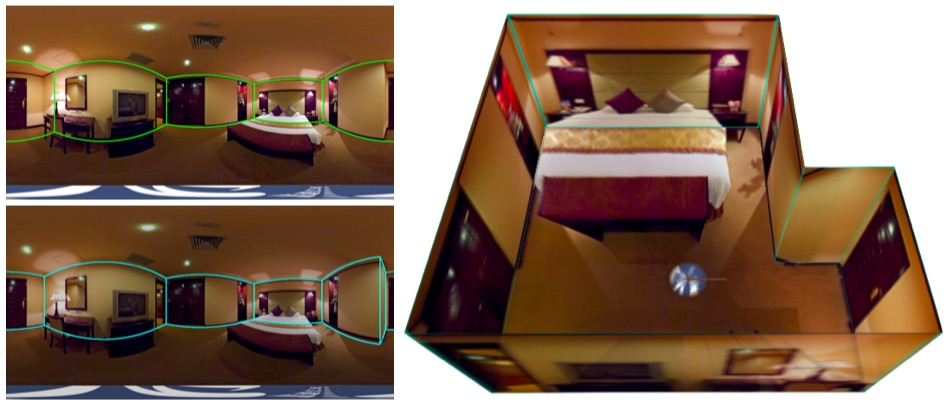
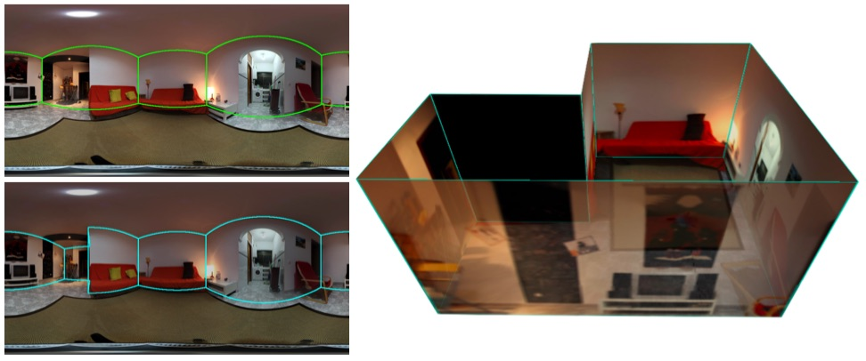

Abstract
We present a new approach to the problem of estimating 3D room layout from a single panoramic image. We represent room layout as three 1D vectors that encode, at each image column, the boundary positions of floor-wall and ceiling-wall, and the existence of wall-wall boundary. The proposed network architecture, HorizonNet, trained for predicting 1D layout, outperforms previous state-of-the-art approaches. The designed post-processing procedure for recovering 3D room layouts from 1D predictions can automatically infer the room shape with low computation cost---it takes less than 20ms for a panorama image while prior works might need dozens of seconds. We also propose Pano Stretch Data Augmentation, which can diversify panorama data and be applied to other panorama-related learning tasks. Due to the limited training data available for non-cuboid layout, we re-annotate 65 general layout data from the current dataset for fine-tuning and qualitatively show the ability of our approach to estimate general layouts.
Links
[Few Annotated Non-cuboid Layout]
Demo Results
Below video show the effect of the proposed Pano Stretch Augmentation and some non-cuboid reconstructed results.
In below figures, green lines are original annotated ground truth while the blue ones are estimated by our approach.
|  |  |
|  |  |
|  |  |
 |
 |
|  |  |
BibTeX
If you use our code or data, please cite:
@article{sun2019horizonnet,
title={HorizonNet: Learning Room Layout with 1D Representation and Pano Stretch Data Augmentation},
author={Sun, Cheng and Hsiao, Chi-Wei and Sun, Min and Chen, Hwann-Tzong},
journal={arXiv preprint arXiv:1901.03861},
year={2019}
}